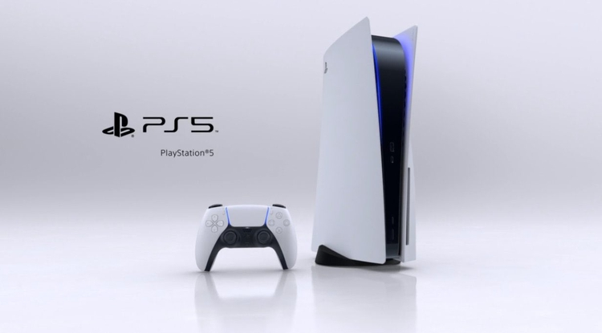

La consola que innovara el mercado ha llegado!

Todo lo que se sabe y lo que se espera de la PS5, la nueva consola PlayStation de Sony. Entérate de las características técnicas, los juegos, el mando y el precio que tendrá la nueva PlayStation 5 que llegará a finales de 2020 a las tiendas.
Espeficicaciones
CPU x86-64-AMD Ryzen “Zen 2” con 8 núcelos y 16 subprocesos, y una frecuencia variable de hasta 3,5 GHz.
Audio 3D envolvente con tecnología Tempest 3D AudioTech, diseñado para ofrecer una mayor inmersión y que identifiquemos desde qué dirección viene cada sonido.
El mencionado disco duro SSD tendrá una capacidad de almacenamiento de 825 GB
Los juegos de PlayStation 5 serán capaces de alcanzar la resolución 8K y la fluidez de 120 fotogramas por segundo, aunque se espera que el estándar normal sea verlos correr de manera fija a 4K y 60 fps.
PlayStation 5 será retrocompatible con PS4, y Mark Cerny ha confirmado que “casi todos” los juegos que se encuentran en el top 100 de los más jugados de PS4 serán retrocompatibles desde el primer día.
Aún no se conoce el precio que tendrá PlayStation 5. Tanto el modelo original de PS4 como PS4 Pro tuvieron un precio de 399 euros en el momento en que salieron a la venta, pero está por ver si PS5 será capaz de mantener esa cifra. Según analistas especializados, aseguran que la PS5 podría rondar los 500 euros, e incluso más teniendo en cuenta sus espectaculares especificaciones